The Witcher 3: Wild Hunt
Geralt hunts the Wild Hunt across a war-ravaged continent teeming with moral complexity.
Review
The Witcher 3 raised the bar for open-world RPGs so dramatically that the industry is still catching up nearly a decade later. You play as Geralt of Rivia, a professional monster hunter navigating a continent at war while searching for his adopted daughter Ciri and the supernatural force pursuing her. The morally grey choice system is exceptional — there are rarely obvious right answers, only difficult tradeoffs whose consequences ripple outward over hours of playtime in unexpected ways. Secondary quests routinely achieve a narrative depth that rivals entire games.
The world is enormous and meticulously handcrafted. Velen's war-ravaged swamps feel genuinely oppressive; Skellige's Norse archipelago is breathtaking; Novigrad's sprawling city teems with political intrigue, crime, and dark humor. Each region has its own ecosystem of characters, factions, and stories. The contract system — hired monster hunts with full investigative sequences — gives Geralt's work as a Witcher an authentic, procedural texture that never gets old.
The two expansions — Hearts of Stone and Blood and Wine — are masterpieces in their own right, each introducing unforgettable new characters and stories that equal or surpass the base game. Blood and Wine in particular, set in the sun-soaked duchy of Toussaint, is among the most beautiful and emotionally resonant pieces of RPG content ever made. The Complete Edition gives you everything: one of the definitive RPG experiences in gaming history.
Strengths and Limits
- Best narrative RPG ever made — quest writing is consistently exceptional
- Morally grey choice system with genuine, far-reaching consequences
- World is enormous yet handcrafted and dense with meaningful content
- Both expansions (HoS, B&W) are masterclass-level additions
- Geralt is one of the most compelling player characters in RPG history
- Tremendous modding support extends the game indefinitely
- Combat feels clunky in the early hours, especially on PC
- Inventory and crafting systems are needlessly obtuse
- Early Velen quests can feel grimy and oppressive to some players
- Horse controls (Roach) remain a recurring joke for good reason
Reader Fit
This review is written around fit: who should play it, what kind of session it rewards, and what friction might make it wrong for another reader. A high grade does not mean every player should buy it immediately. It means the game has a clear identity, a strong reason to exist, and enough craft to justify attention from the right audience.